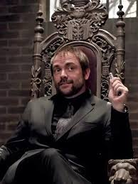

The King of Hell: 1661 - 1723
Fergus Roderick MacLeod was a human who died and eventually became the King of Hell. Though technically a "bad guy," Crowley is loved for his sass and humor. Surprisingly, he often joins forces with the brothers to save humanity.